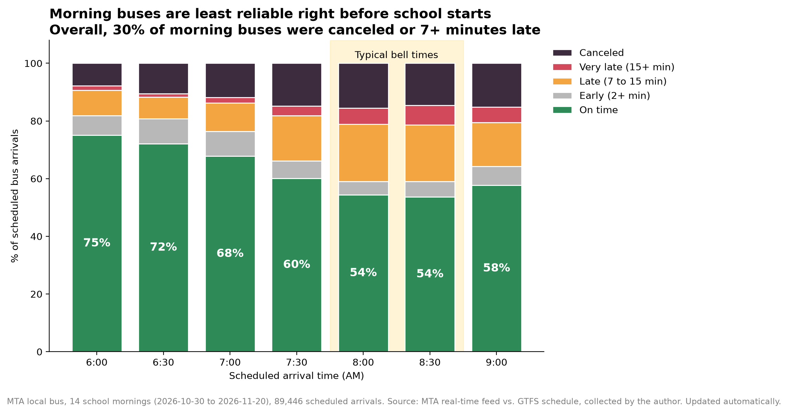

How every MTA local bus performed during school commutes.
See the results →Evidence standards, transparency, and clear limitations.
Project status →Are buses getting students to school on time?
Every school morning, this project checks every MTA local bus against its schedule. This chart is redrawn automatically after each morning's data is collected.

A More Reliable Baltimore
Reliable transportation supports learning, work, neighborhood opportunity, and the economic life of Maryland's largest city.
Why this project exists: the reporting gap
Public transit accountability cannot depend exclusively on formal passenger complaints. A bus that fails to arrive, bypasses a stop, or leaves a student without transportation may never be reported through an agency complaint channel. Minors and other riders may face practical barriers to filing a complaint.
As a result, complaint counts may understate the number of service failures. A low complaint count alone is not proof of reliable service. Maryland Public Information Act requests can retrieve existing agency records, subject to applicable law, but cannot by themselves reveal incidents that were never recorded.
This independent, publicly viewable project aims to supplement agency records with archived transit feeds, carefully labeled rider reports, and reproducible analysis of educational, safety, and economic impacts. Reports are classified as verified, corroborated, unverified, or inconclusive. The project does not presume that any particular incident establishes a legal violation or that most affected students are unable to complain.
When a bus never arrives, what bus number can a rider report?
Passengers can identify the route, stop, date and scheduled time of a missing bus—but cannot observe the vehicle number of a bus that never appeared. This project will audit whether MTA's complaint form requires that information or merely requests it; the requirement has not yet been independently verified.
High-school students should not have to navigate an administrative complaint process for scheduled service failures to be detected. Complaint totals count reports received, not necessarily all failures. The scale of student underreporting is not yet established.
Our independent record will compare scheduled trips, available vehicle and dispatch data, carefully classified rider reports, and any matching agency complaint records. An absence of complaints is not proof of service, and missing GPS is not proof of a no-show.
Project status
Starter deployment. No verified live performance data has been published.